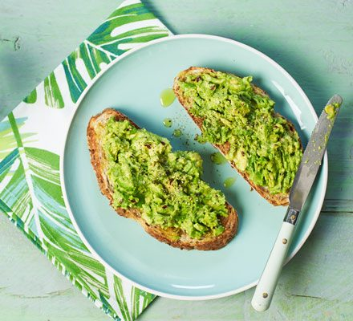

Avocado Toast

Description
Quick, healthy, and endlessly customizable, avocado toast is a nutritious breakfast or snack that’s ready in
minutes.
Ingredients
- 1 ripe avocado
- 2 slices of bread (whole grain, sourdough, or your choice)
- 1/2 lemon (for juice)
- Salt and pepper (to taste)
- Olive oil (optional)
- Red chili flakes or seeds (optional for topping)
Steps
- Toast the bread slices until golden and crispy.
- Cut the avocado in half, remove the pit, and scoop the flesh into a bowl. Mash with a fork until smooth.
- Add lemon juice, salt, and pepper to the avocado mash and stir to combine.
- Spread the avocado mixture evenly on the toast.
- Drizzle olive oil or sprinkle chili flakes for extra flavor, if desired. Serve immediately.